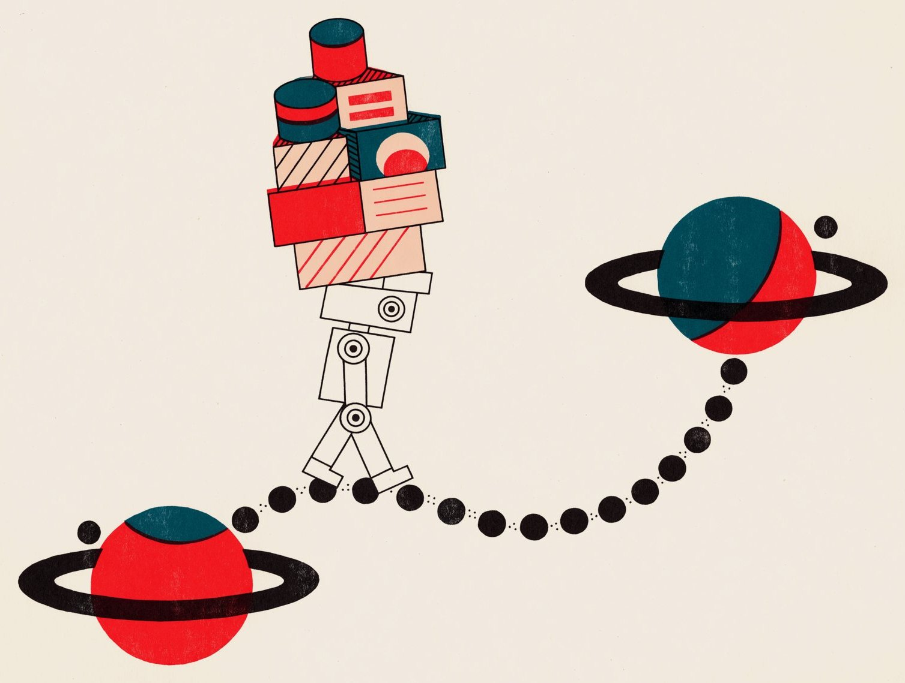

USE-IT Europe
€400,000 Erasmus+ project that put a European travel network online
USE-IT is a network of free city maps for young travellers, made by locals in cities across Europe. I led DIG-IT, an Erasmus+ KA2 project that built the network's online presence, which is now how USE-IT Europe reaches travellers.
How it started
My first USE-IT project was the map for my home city, Olsztyn, in 2017–2019. I raised the funding, ran the local research and led the creative team. We printed 20,000 copies, and our campaign reached more than two million young Europeans.